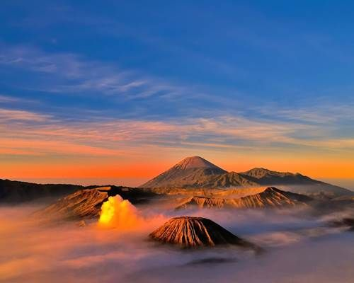
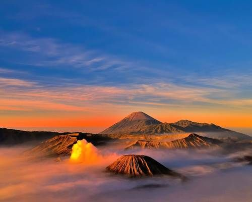

Gunung Bromo

Gunung Bromo adalah salah satu gunung berapi aktif di Jawa Timur. Sunrise di Bromo menjadi salah satu atraksi wisata paling terkenal di Indonesia.



Gunung Bromo adalah salah satu gunung berapi aktif di Jawa Timur. Sunrise di Bromo menjadi salah satu atraksi wisata paling terkenal di Indonesia.
